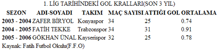
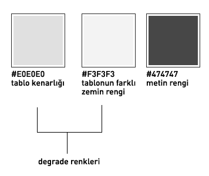
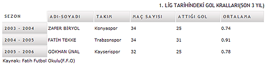
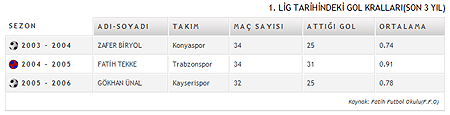

Bu makalemizde CSS ile tablolarımızı nasıl daha okunaklı ve güzel gösterebiliriz onu anlatmaya çalışacağız. Bildiğiniz gibi CSS'in namını arttıran olay web sayfa iskeletinin tablolar ile değilde katman(<div>) ile kodlaması ile olmuştur. Ancak burada bir yanlış anlaşılma oluyor genelde, oda şudur ki tablolarda bir Xhtml elementidir ve gerektiği yerlerde kullanılmalıdır, amacımız tablo kullanmamak değil web standartlarına uygun kodlama yapmak olduğunu hiç bir zaman unutmayalım. Tablo kullanılacak yerlerde de katman kullanarak işi çığırından çıkılmaz hala getirmenin bir anlamı yoktur. Tabloların kullanıldığı yerlere bir kaç örnek verelim:
- Takvim
- Finansal Tablolar
- Çizelgeler
- Plan Listeleri(otobüs, uçak iniş kalkış saat listesi vb.)
Yukarıda verdiğimiz örnekler vb. durumlarda kullanılan tablolar genelde okunması zor ve göze hoş gelmeyen yapılardır. Biz CSS ile bu tabloları daha okunaklı, kodlaması daha kolay ve güzel hale getireceğiz.
Tabloların genel yapısı aşağıdaki gibidir.
<table> <tr> <td>... içerik ...</td> </tr> </table>
Yukarıda kullanılan tablo yapısı genelde kullanılan tablo yapısıdır. Ancak tüm araçlara uyumu, erişebilirliği ve kolay kodlama için daha gelişmiş bir tablo kodlaması kullanılmalıdır. Örnek
<table cellspacing="1" class="uzerinde" id="golKrallari" summary="Türkiye Süper Ligi’nin son 3 yılında en çok gol atan futbolcu listesi"> <caption>1. LİG TARİHİNDEKİ GOL KRALLARI(SON 3 YIL)</caption> <thead> <tr> <th scope="col" abbr="sezon" class="bgYok">SEZON</th> <th scope="col" abbr="adsoyad">ADI-SOYADI</th> <th scope="col" abbr="takım">TAKIM</th> <th scope="col" abbr="maç">MAÇ SAYISI</th> <th scope="col" abbr="gol">ATTIğI GOL</th> <th scope="col" abbr="ortalama">ORTALAMA</th> </tr> </thead> <tbody> <tr> <th scope="row" abbr="03-04" class="baslikBir">2003 – 2004</th> <td class="tabloZRFark">ZAFER BİRYOL</td> <td class="tabloZRFark">Konyaspor</td> <td class="tabloZRFark">34</td> <td class="tabloZRFark">25</td> <td class="tabloZRFark">0.74</td> </tr> <tr> <th scope="row" abbr="04-05" class="baslikIki">2004 – 2005</th> <td>FATİH TEKKE</td> <td>Trabzonspor</td> <td>34</td> <td>31</td> <td>0.91</td> </tr> <tr> <th scope="row" abbr="05-06" class="baslikBir">2005 – 2006</th> <td class="tabloZRFark">GÖKHAN ÜNAL</td> <td class="tabloZRFark">Kayserispor</td> <td class="tabloZRFark">32</td> <td class="tabloZRFark">25</td> <td class="tabloZRFark">0.78</td> </tr> </tbody> <tfoot> <tr> <td colspan="6">Kaynak: Fatih Futbol Okulu(F.F.O)</td> </tr> </tfoot> </table

Tablomuzun içeriği bu kadar kısa olmasına karşın ne kadar okunaksız ve kötü göründüğü ortada. Bizim amacımız web sayfaları kodlarken sadece bilgi sunmak değildir. Bilgiyi en kullanışlı ve güzel şekilde sunmaktır.
Burada normal tablo kodlamasından farklı olan etiketleri açıklarsak. <table> kodu içindeki summary özelliği ile tablo içeriğinin bir özet açıklaması yapılmıştır. Bu özellik web değilde cep telefonu, pda vb. araçlarda tablo okuması için önemlidir. <caption> özelliği tablonun başlığını oluşturmak için üretilmiş bir etiketitir ve bu amaçla burada kullanılmıştır.(Bir çok sitede tablo başlığı için <p>, <div> ve <hx> kullanılmaktadır. Bu kullanımların yanlış olduğunu burdan belirtelim.) <th>etiketi bu alanın bir başlık olduğu belirtir,<th> etiketi içerisinde kullanılan scop="col" ve scop="row" özelikleri yine küçük ekranlı araçlar için başlık ile içerik arasındaki ilişkiyi göstermesi bakımından önemlidir. abbr özelliği ise küçük ekranlarda başlığın sığmaması halinde görüntülenecek başlığın kısaltmasını içerir.
Ayrıca thead, tbody ve tfoot etiketleri tabloyu 3 alana böler ve CSS ile XHTML etiketleri arasında daha fazla etkileşim yapmamızı sağlar.
Tabloları CSS ile güzelleştirirken renk seçimi önemlidir. Birbirine uyumlu renkleri seçmek her zaman güzel sonuçlar doğuracaktır. Ben biraz sade tasarımları beğendiğim için gri ağırlıklı bir tablo yapacağım. Genelde tablolara uygulanacak renklerin seçimini yaparken web sitesinin tasarımına uygun renkler seçilmelidir. Bu yaptığımız web sitesindeki tutarlılığı korumamızı sağlayacaktır. Benim seçtiğim renkler:

CSS kodunu yazmaya başlayalım:
body { font: normal 11px auto "Trebuchet MS", Verdana, Arial, Helvetica, sans-serif; } #golKrallari { width: 700px; }
Tablonun başlığını(<caption>) düzenleyelim
caption { padding: 0 0 5px 0; font: 14px "Trebuchet MS", Verdana, Arial, Helvetica, sans-serif; text-align: right; }
Daha sonra kolon başlıklarını <th> kodlayalım. Burada başlıkların daha güzel görünmesi için kolon başlıklarının zeminine degradeli bir zemin resmi koyalım. Ayrıca kolon ve satır başlıklarının birleştiği sol üst hücreyi diğerlerinden ayıracak(.bgYok) bir zemin resmi ve rengi olmadan kodlayalım:
th { font: bold 11px "Trebuchet MS", Verdana, Arial, Helvetica, sans-serif; color: #474747; border-bottom:1px solid #E0E0E0; border-right:1px solid #E0E0E0; border-top:1px solid #E0E0E0; letter-spacing: 2px; text-align: left; padding: 6px; background: #F3F3F3 url(images/tablo_baslik_zr.gif) repeat-x; } th.bgYok { border-top: 0; border-left: 0; border-right: 1px solid #E0E0E0; background: none; }

Kolon başlıkları ile satır başlıklarını bir birinden ayıralım. Ayrıca Satır başlıklarına bir top ikonu koyalım. Burada dikkat edilmesi gereken bir konuda birbirini takip eden tablo satırlarının zemin rengini farklı farklı tanımlayarak tablo okunurluluğunu arttırmaktır. Biz burada bir satırın zemin rengini #F3F3F3 diğer satırın zemin rengini de #FFF yaptık.
Burada ikonlardan farklı olanın bordo-mavi olması ve bu satırın Fatih Tekke'ye denk gelmesi tamamen bir rastlantı dır :-)
th.baslikIki { border-left: 1px solid #E0E0E0; border-top: 0; padding-left:25px; background: #fff url(images/top2.gif) 5px no-repeat; } th.baslikBir { border-left: 1px solid #E0E0E0; border-top: 0; padding-left:25px; background: #F3F3F3 url(images/top.gif) 5px no-repeat; }
Veri içeren hücreler içinde kenarlık, zemin rengi, font rengi ve padding tanımlaması yapalım ve burada da birbirini takip eden satırlar için farklı renk uygulamasını yapalım. Bunun için bir sınıf oluşturup(.tabloZRFark) farklı satırlara atayalım.
td { border-bottom:1px solid #E0E0E0; border-right:1px solid #E0E0E0; background: #fff; padding: 6px; color: #474747; font:11px "Trebuchet MS", Verdana, Arial, Helvetica, sans-serif; } td.tabloZRFark { background: #F3F3F3; color: #474747; }
Tablonun alt kısmı içinde aşağıdaki kodu yazalım:
tfoot tr td{ text-align:right; border-left:1px solid #e0e0e0; border-bottom:2px solid #e0e0e0; font:italic 9px "Trebuchet MS", Verdana, Arial, Helvetica, sans-serif; }

Son olarak farenin imleci üzerine gelen satırın zemin rengini değiştirerek okunurluluğu arttırmak için aşağıdaki kodları yazalım:
#golKrallari tr.uzerineGelince td, #golKrallari tr.uzerineGelince th{ background:#474747; color:#f3f3f3; }
fare imlecinin satır üzerine geldiğinde çalışacak javascript kodu:
function uzerinegelince() { if (document.getElementById && document.createTextNode) { var tables=document.getElementsByTagName('table'); for (var i=0;i<tables.length;i++) { if(tables[i].className=='uzerinde') { var trs=tables[i].getElementsByTagName('tr'); for(var j=0;j<trs.length;j++) { if(trs[j].parentNode.nodeName=='TBODY') { trs[j].onmouseover=function(){this.className='uzerineGelince';return false} trs[j].onmouseout=function(){this.className='';return false} } } } } } }
Bu kodu tetiklemek için:
<body onload="uzerinegelince()">
kodunu yazalım. Fare imlecinin üzerine geldiğinde satır zemin rengi ve metin renginin değişmesi bölümün de bir iki dikkat edilmesi gereken yer var. İlki tablodaki class="uzerinde" ve javasciriptteki if(tables[i].className=='uzerinde') aynı olması, ikincisi javascriptteki
trs[j].onmouseover=function(){ this.className='uzerineGelince'; return false; }
ile
#golKrallari tr.uzerineGelince td, #golKrallari tr.uzerineGelince th{ background:#474747; color:#f3f3f3; }
aynı olması. Evet tablomuz sona erdi.
Sonuç sayfasını görmek için tıklayınız.
Kodlar Windows ortamında Firefox 2.0, IE 5.01, IE7 ve Opera 9.0 web tarayıcıları ile test edilmiştir.
Kaynaklar
- http://veerle.duoh.com/
- http://icant.co.uk/ (CSS ile yapılmış bir çok tablo örneği)
- http://alistapart.com/
Yorumlar !